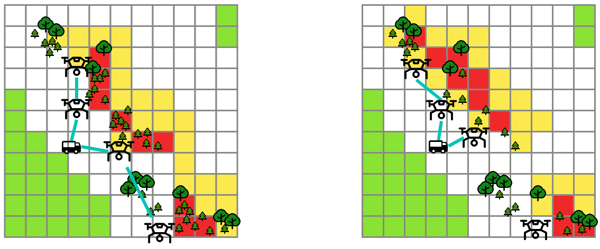
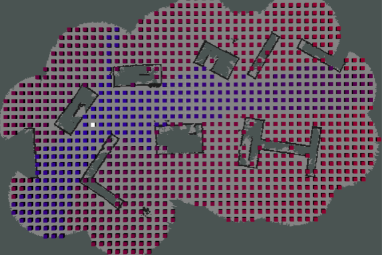
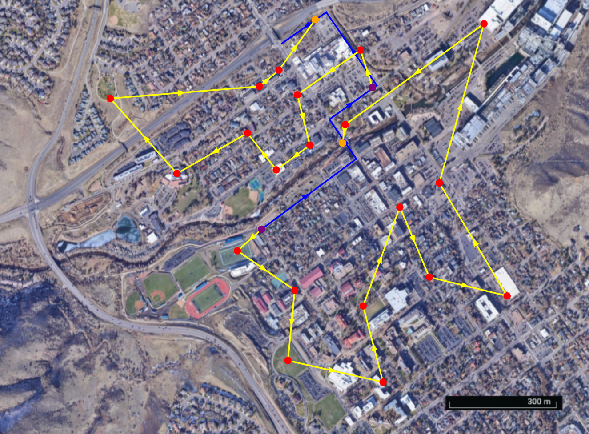

The classical task assignment problem can be applied to various real-world applications. However, in many applications agents are not guaranteed to complete their assigned task 100% of the time and agents might become faulty during task execution, requiring one to reassign agents to tasks. In this work, we consider how to maximize the probability that all tasks are completed while considering the probability that an agent could fail during task execution.

In this project, we study how to effectively deploy a team of UAVs to collect data from wireless sensors. We seek to combine offline planning with online decision making that can be validated through both simulations and physical testbed evaluations.

This project studies how to enable mobile agents to avoid malicious communication jamming through mapping techniques. We look at networked ground robots operating around WiFi jammers as our motivating application.

In many UAV applications, it is more advantageous for a UAV base station to move to a new location after launching UAVs as opposed to remaining in the same position while the UAV performs some given task. In this project we are looking at how to plan UAV routes that minimize mission completion time while accounting for a moving base station. We also consider the relationship between UAV speed and power consumption and look at how scheduling speed can effect route planning.
